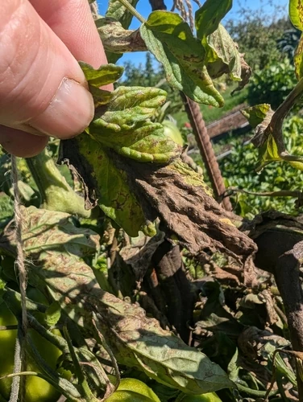

叶缘发黑变软
先分辨叶缘是发暗变软，还是干枯发脆，再另查根团湿度。仅凭黑边不能判断是否浇水过多。

这张图用于比较叶缘发暗的外观。番茄或马铃薯若出现向外扩大的褐斑、边缘呈灰绿色，应另行排查晚疫病。室内盆栽则先看是否受冷、盆底是否积水，再决定怎样调整养护。
先看哪里
确认黑边是干脆还是湿软，回顾是否碰到冷窗或受过低温。
盆栽可先取出内盆，检查底部。表土干了，底层仍可能很湿。回想上次浇透至今过了多久，检查外盆底部有没有存水。
可能原因与下一步
冷害与组织腐坏可能相似。避开寒风和湿叶接触，观察新损伤是否继续出现。
怎样区分相似问题
干脆的焦边和柔软的暗边提示的情况不同。检查表土以下的湿度，也看看叶片是否碰到冷窗。
轻触黑边，软塌的叶缘要检查排水。如果只有夜间贴着冷玻璃的一侧受损，先让叶片离开玻璃，观察背窗侧，再决定是否调整浇水。
现在可以做什么
倒掉托盘积水并确认排水孔畅通；若根团实际很干，先纠正缺水，再考虑修剪叶尖。
保留另一片坚实绿叶的完整叶缘作对照，若后来也变软，记录当时温度和湿度。下次检查时，比较根层湿度与第一次测得的结果。
接下来观察什么
观察健康与受损组织的分界；若软斑扩展且盆土持续湿润，检查根系有无腐烂。
顺着黑边查接触位置
盆栽贴着冷窗时，对照同一片叶贴窗侧与背窗侧的叶缘。把叶片移离玻璃，拍照记录黑边轮廓。若遮蔽处也新出现湿软黑边，就要重新排查原因。